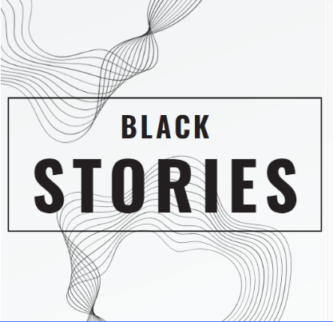

Ciências Humanas:

Criar um "Black Stories" geopolítico foi inovador, a atividade transformou o estudo tradicional em prendizado ativo, com investigação e debate sobre o passado. Explora a criatividade e leva a uma compreensão mais profunda sobre os antigos conflitos, que podem gerar consequências ainda nos dias de hoje.